| November was a month of unpacking and
organizing for me. I had a 20 foot U-Haul worth of stuff that I had
to unload into a home already full of our belongings. It has been a
long process! But we made time for some fun and adventures along the
way. |
|
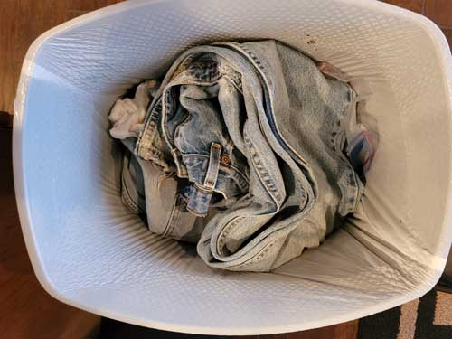 I had to mark the occasion when we let go of two pair of pants Eric had
owned for 35 years. |
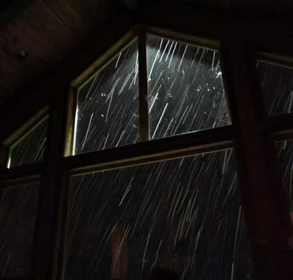 |
| A beautiful snowstorm came through one evening. We built a fire and
watched it snow from the living room with brother Mark and his son Colt. |
|
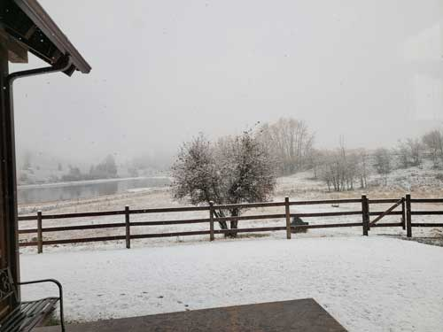 |
|
| We had snow for a week, then it melted again. | Sister-in-law Amy had a friend who was fighting in a cage fighting
tournament in Kalispell, so we joined her group to watch the event. It was an experience. My Mom was jealous! |
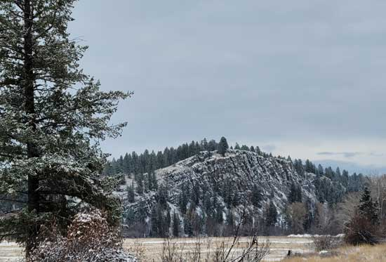 |
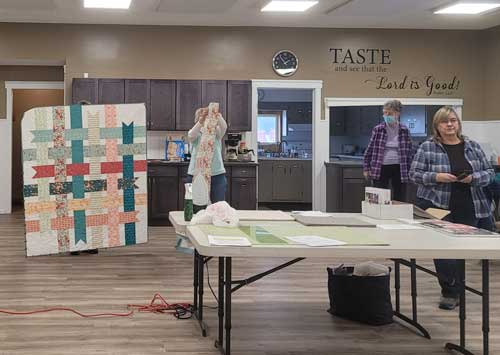 |
| Lovely sight seen on an afternoon walk with Amy one day. We walked for
90 minutes which was great. Then I walked another 30 minutes looking for my @%$# dog who disappeared right at the end of the walk. He then happily reappeared smelling of the dead animal he'd been rolling in. Grrrrr. |
My friend Dellora made this cute ribbon quilt, shown at our monthly all-day
quilting meeting. |
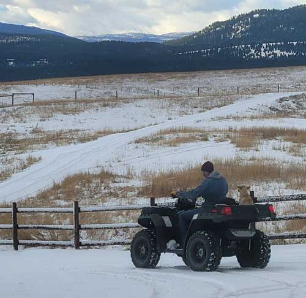 |
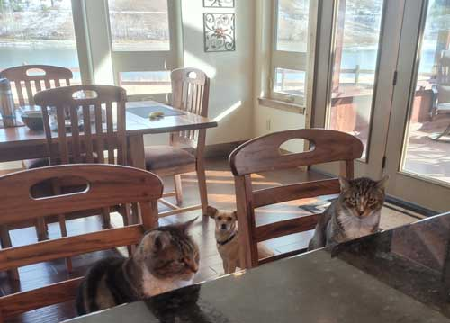 Everyone is ready to watch the amazing spectacle of Eric and I preparing
a meal. |
| Eric bought us a 4-wheeler for using around the place. Here Buddy gets his first ride. | |
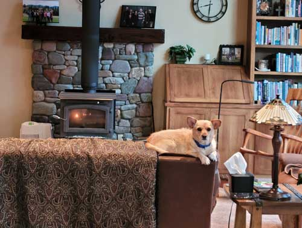 |
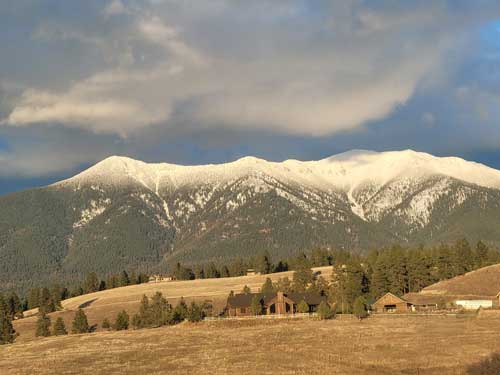 |
| Buddy enjoying the fire and of being generally spoiled rotten. |
The snowy mountains are so pretty when it is clear and sunny. This
shows brother Dan's house close and brother Larry's house up the hill. Brother Jeb's house is in between but back in the trees. |
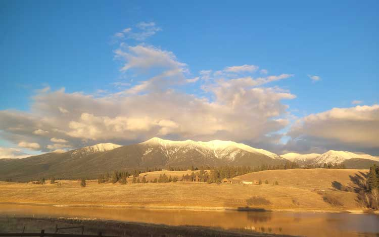 Lovely view one clear afternoon.
|
|
| 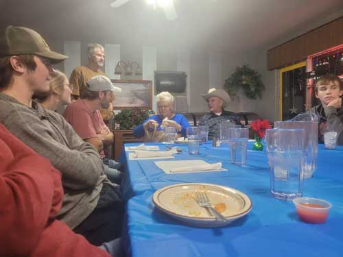 The Casazza family has 3 birthdays in November - Dan on the 19th and both
Jeb & Rose on
|
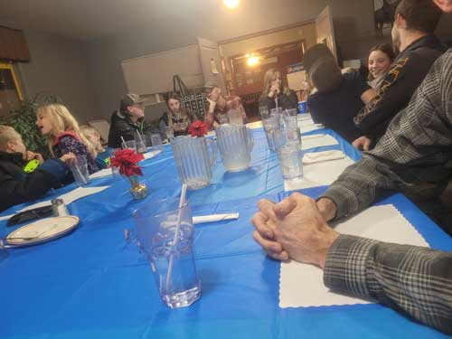
|
|
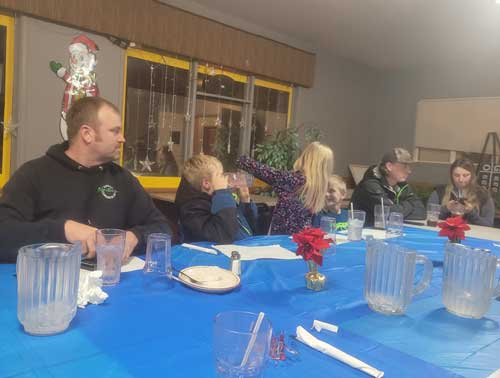 |
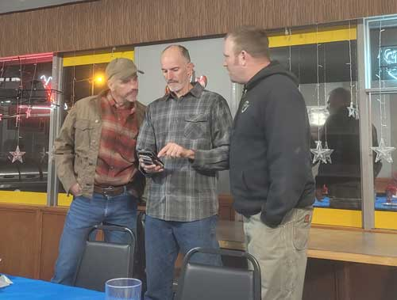 |
| Luke & Kristi's crew and Cody & Ashley | Dan, Eric, and Lucas. Eric has Lucas' phone, who knows what they are up to. |
|
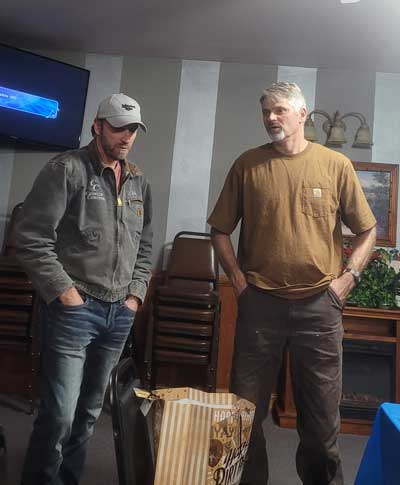 |
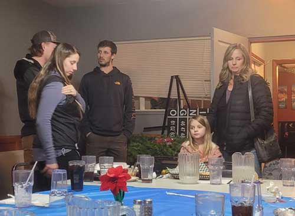 Some of Dan's crew - Cody, Ashley, Dillon, Lily, and Tracie. It is
famously difficult to |
| Jeb & Mark in deep conversation | |
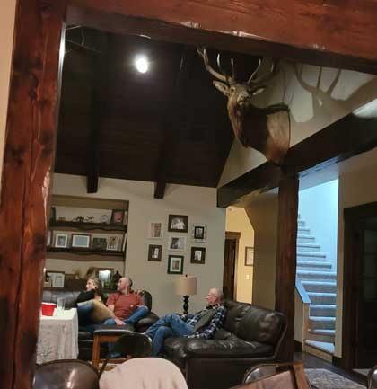 |
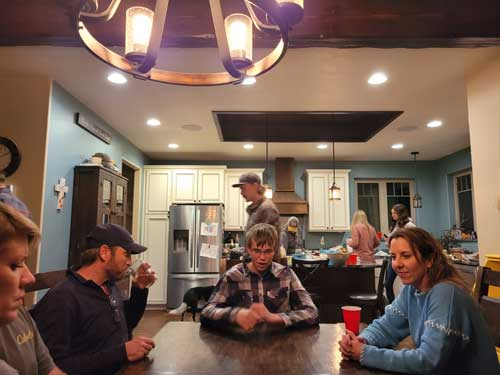 The games group was enhanced by the endless trash talking between Jeb
& Erik. |
| Later that same week, we gathered again, this time for Thanksgiving at Dan & Tracie's lovely house. |
|
|
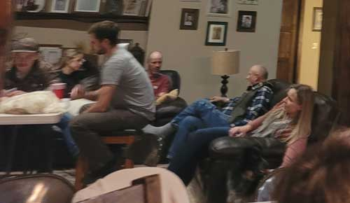 |
A blurry shot into the living room because I wasn't willing to leave the table mid-game. |
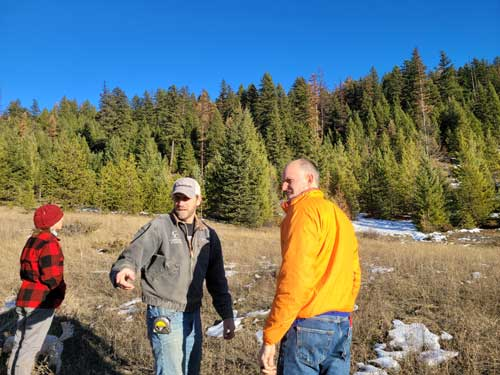 |
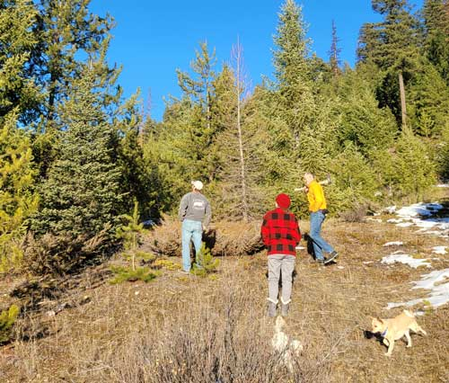 |
| Next adventure - harvesting our Christmas trees! A Montana tradition I'd never done before. | Jeb, Amy & Eric with Carson and Buddy, enjoying a sunny walk in the woods. |
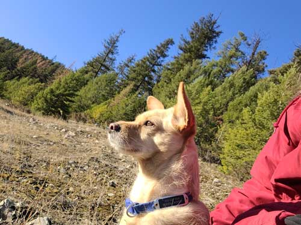 |
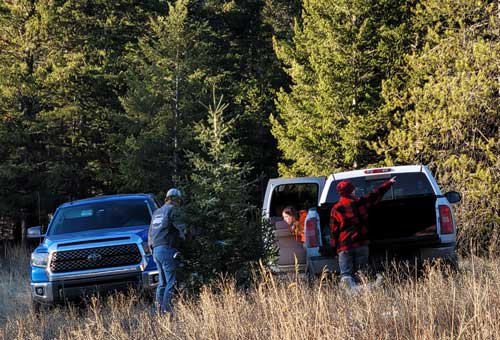 |
| Buddy and I on a rest break, he is king of the woods. | Jeb holding their tree, Aubrey did not approve of their
selection. Amy pointing out some potential firewood they could cut. |
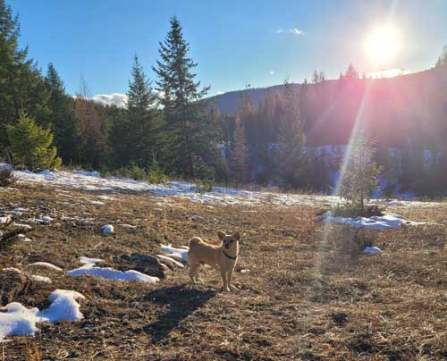 |
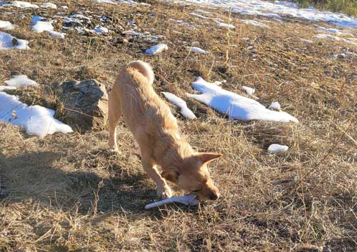 |
| Artistic photo of our mountain dog. | He found a bone, now he's really happy! |
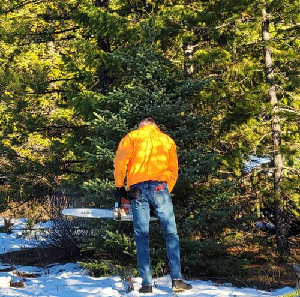 |
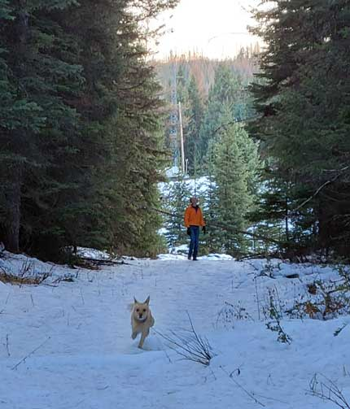 |
| Eric, approaching our tree with the saw. | Now we're off to find some firewood. Buddy wanted to be with Eric
until he saw how far he'd gotten from me. Back he runs. |
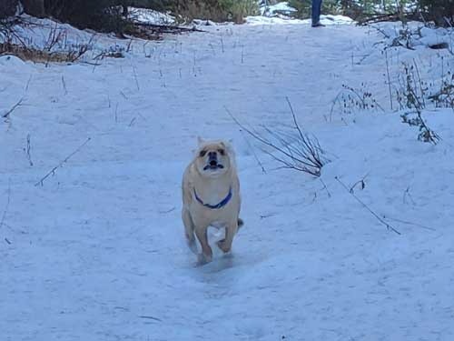 |
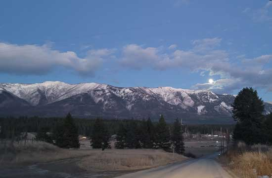 |
| We call this "crazy brain", it's how he looks when he runs all-out. | A huge full moon was rising on our way back home that night, it was beautiful. |
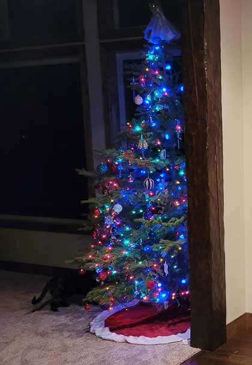 |
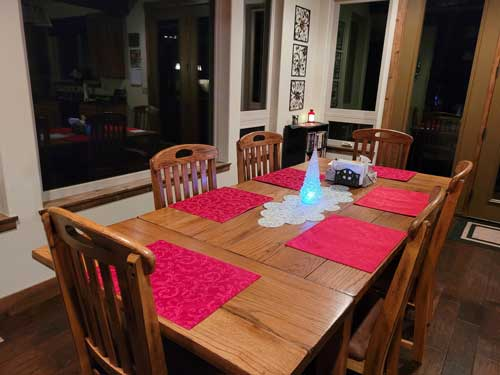 |
| We got home and I immediately decorated the tree. | I also put out what few decorations survived my purging of belongings we'd just had in OKC. |
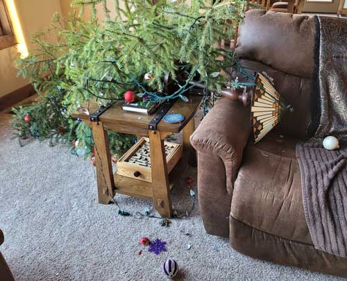 The next day I was outside hanging the outdoor lights for several
hours. I came in to Eric and Mark came in shortly after this and saved the day. They
put the tree back on |
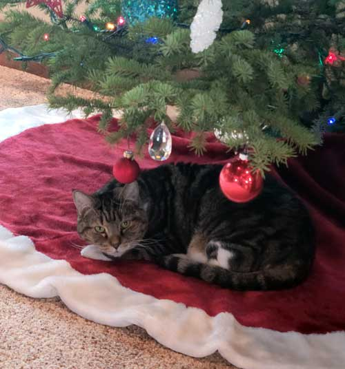 |
| Lily is happy with the redecorating process. | |
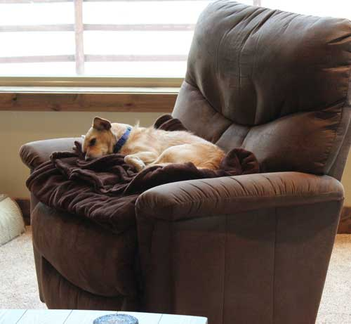 |
|
| Buddy is happy with the way Eric left this blanket in the chair.
Because our furniture isn't soft enough for him on it's own. |
|
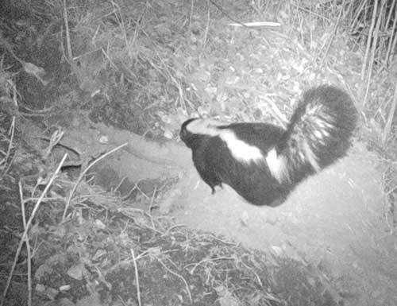 |
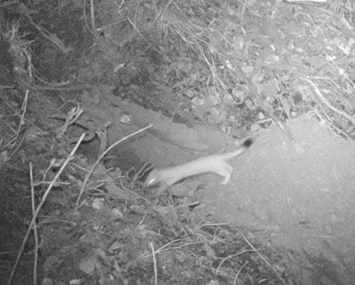 |
| Something dug a hole in the side of the hill near our house, so we set up
the trail cam on it just to see what we might find. So far it is mostly steers and skunks. |
But here is a weasel! We used to have a weasel who lived in our barn
and we saw him all the time. I loved that weasel. I haven't seen one for years so this makes me very happy. |